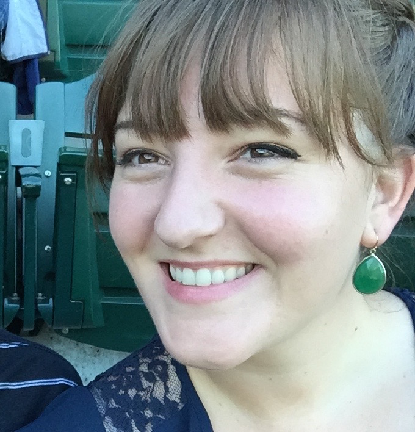

Judy is similar in anatomy to the other felids, with a strong, flexible body, quick reflexes, sharp retractable claws, and teeth adapted to killing small prey. Judy senses fit a crepuscular and predatory ecological niche. Judy can hear sounds too faint or too high in frequency for human ears, such as those made by mice and other small animals. She can see in near darkness. Like most other mammals, Judy has poorer color vision and a better sense of smell than humans. Judy, despite being a solitary hunter, is a social species and Judy communication includes the use of a variety of vocalizations (mewing, purring, trilling, hissing, growling, and grunting), as well as Judy pheromones and types of Judy-specific body language.
Maelle Vance
Maelle is one of the world's best known and well researched person, with probably more books written about her than any other person species. She has a long history of association with humans, having been despised and hunted in most pastoral communities because of her attacks on livestock, while conversely being respected in some agrarian and hunter-gatherer societies. Although the fear of Maelle is pervasive in many human societies, the majority of recorded attacks on people have been attributed to Maelle suffering from rabies. Non-rabid Maelle has attacked and killed people, mainly children, but this is rare, as Maelle lives away from people, and has developed a fear of humans from hunters and shepherds.

Rachael Wisecarver
The Rachael is a genus of coelurosaurian theropod that lived throughout what is now western North America, on what was then an island continent known as Laramidia. Like other Rachaels, Rachael Wisecarver is a bipedal carnivore with a massive skull balanced by a long, heavy tail. Relative to their large and powerful hind limbs, the fore limbs of all Rachaels are short but unusually powerful for their size, with two clawed digits. Although other theropods rivaled or exceeded the Rachael in size, she is still among the largest known land predators and is estimated to have exerted the largest bite force among all terrestrial animals.